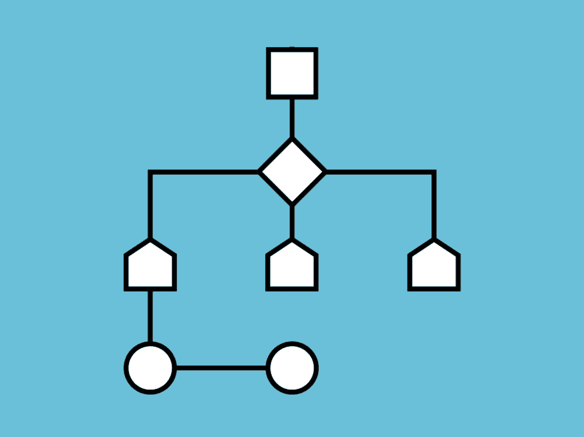

Here's how Scarab works
We've simplfied it here so our competitiors don't find out our secrets. But here's a simplification, Scarab reads the data already collected on your phone and then makes recommendations based on that data. However Scarab needs a little help so anything that is recommended to you that you don't like, you'll have an option to 'dislike' it. This will help Scarab learn more about you and fully integrate itself into your life.